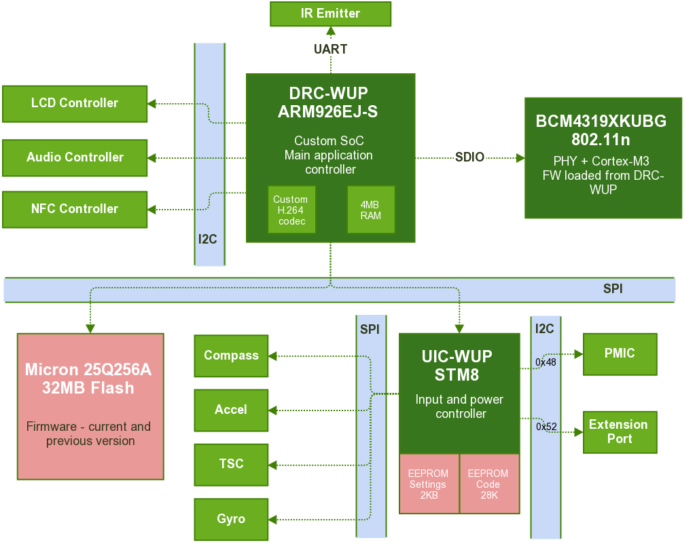

Codename for the main Wii U GamePad CPU. It is used in this documentation and libdrc as a short name for the Wii U GamePad.
The small part of the Wii U console that handles communication with the GamePad. It is very similar to the DRC internally and acts very separately from the rest of the console. It communicates with IOSu (the Wii U operating system) via USB.
The Wii U GamePad is a fairly complicated piece of hardware, containing several important and sometimes custom ICs (including 3 CPUs).
This is the main chip that runs the GamePad firmware. It is also referred to as “the ARM9” or “the LVC” in this documentation (LVC is the name of the firmware unit ran by DRC-WUP).
This SoC is based on an ARM926EJ-S CPU and seems to be custom made for this device. It presents no external markings that would allow identification of a designed/manufacturer, but it is assumed to have been designed by MegaChips Corporation. The hardware H.264 decoder present inside seems to also be of a custom design.
It is connected directly to some components via I2C and GPIOs, but it relies a lot on the UIC, which it communicates with over a SPI bus.
It is assumed to contain a very simple boot ROM that reads a secondary bootloader (SPL) from the Flash. The Boot process section goes more in details about this.
A Broadcom Wi-Fi chip that is not so custom - it was actually used in a few other products, including the Boxee TV box. The firmware running on it is a fairly standard Broadcom SDIO chip firmware with very slight alterations from Nintendo. The Wi-Fi Peculiarities section explains these changes.
It is capable of 802.11n on 5GHz frequency bands, which is the requirement to communicate with a Wii U console.
The firmware on this Broadcom chip runs on a Cortex-M3 CPU, which is amusingly more recent than the ARM926EJ-S running the main firmware.
A small embedded chip based on an STM8 CPU. It runs its own firmware loaded from an on-chip EEPROM (upgradable). Its main role is to communicate with all the input devices (buttons, analog sticks, as well as the more complicated ICs like compass, accelerometer, gyroscope and touchscreen controller) and with the Power Management IC (PMIC) that handles power control on the board (battery charge, as well as status LEDs).
It communicates with the LVC over a SPI bus (on which it is slave). A simple request-reply protocol is used to perform several actions.
The UIC also has the weird function of storing some of the configuration settings in a 2KB EEPROM. A description of the settings stored in that EEPROM can be found in the Settings EEPROM structure section.
The most important part of the Wii U GamePad firmware is the LVC_ part,
which contains the code running on the ARM9 CPU. This firmware is based on the
eForce operating system, a real time operating system following the µITRON 4.0
specification.
The ASSERT macros used throughout the LVC firmware code also references the
source file names, giving a good idea of the structure of the firmware code and
how it was made. There are 4 main parts in the LVC firmware:
Handle communication with the hardware as well as internal synchronization and callback mechanisms. The following drivers are present in the latest version of the Wii U GamePad firmware:
aamp - audio amplifier
acapt - audio capture
aout - audio output
blit - screen surface blit
cmos - video camera
dma - generic DMA handling library
evt - generic event/callback library
fifo - unknown
flash - SPI flash
gpio - generic GPIO management library
i2c - I2C controller
ir - infrared output
lcd - LCD screen controller
mem - memory allocator
spi - SPI controller
uic - SPI UIC (STM8 CPU)
vcapt - video capture
vout - video decoding and output
wifi - Wi-Fi networking
Network related processes that are either servers or clients and handle protocol related work: crafting and decoding packet, validating data, then passing it further down the stack to a manager that will handle the request if needed. The following services are present in the latest version of the Wii U GamePad firmware:
astrm - audio streaming protocol
cmd - request-reply/light RPC protocol
hiddat - input streaming protocol
msg - broadcast/inter-GamePads communication protocol
vstrm - video streaming protocol
wii - unknown
Background processes often getting data from either drivers or services. They keep track of state and handle most of the work that is not done in drivers. The following managers are present in the latest version of the Wii U GamePad firmware:
cmd - takes requests from the cmd service and sends replies
con - handles low-level network (Wi-Fi layer)
devif - unknown
draw - handles local image drawing
gamectrl - unknown
ictag - contains a NFC stack to handle requests from the cmd manager
ir - handles IR communication
msg - handles messages from the msg service
nvram - handles Flash and firmware management (upgrade, etc.)
nwk - handles high-level network (IP/UDP layer)
resource - handles resource loading from the Flash
sound - handles sound stream playback
state - unknown
sync - unknown
time - unknown
userif - local parsing of input data (for on-GamePad applications)
video - handles video stream decoding and playback
The main part of the firmware. It is a simple state machine that
decides what to do at every moment and what managers, services and drivers
to initialize.